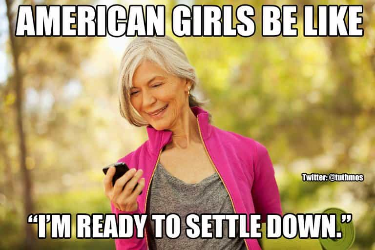

John Carver is a four year ROK veteran with over fifty articles of SJW-triggering truth bombs on archive. You can follow him on Twitter if you are so inclined.


As social media has exploded in recent times with the likes of Facebook, Instagram, Snapchat, and Twitter, few other pursuits have been shoved more prominently into the faces of people everywhere than the exciting world of travel. And we all know how women love their social media to death don’t we?
Furthermore, since few other types of pictures with gather more “likes†and fawning commentary than presenting yourself in front of a world famous landmark or viewpoint, young women all across the world are ravenous in wanting to spend as much of their twenties as possible traveling and basking in the divine light of digital validation.
All these “likes†are like heroin!
Accordingly, solo female travel blogs have boomed during the 2010s.
While most will achieve incredibly minute readership and eventually give up on their writing hobby, some solo female travel bloggers build up very large followings and can exert great influence on their young and idealistic fans. And it’s often hardly in their best long term interests.
This article will explore four ways that solo female travel bloggers are a nuisance to society, rather than smiling saviors.
Look at meeeeeeeeeeeee!! 😀
Solo female travel bloggers are absolutely in love with themselves, and completely addicted to the regular discharge of dopamine and serotonin in their brains which is unleashed after a barrage of “likes†and praises of “you’re so inspiring!†flood their comment boxes.
They completely discourage humbleness and introspection with their pursuits, and are ultimately rather selfish bastards to boot. For instance, they claim to want to “empower†and “inspire†you to travel (seriously, are these the two most overused and impotent buzzwords in travel blogs?), but in reality they would prefer you to just live vicariously through their own travels and contribute much desired blog traffic for advertising revenue and marketing referrals.
Social Media brought out the worst narcissistic behavior we have ever seen in young women, and solo female travel bloggers endlessly take that narcissism worldwide.
I really hope that hawt tattooed surfer guy will notice me tonight…
To be fair, a lot of the solo female travel bloggers out there keep their travel bangs either incredibly vague or hush-hush altogether. Thus keeping their writing focus almost entirely on their travel exploits and stupid food pictures.
However, some of the biggest names in this niche business love to gloat about all the “hawt†Australian, English, Irish, or Swedish guys they shared hostel beds or sex-on-the-beach with during their walkabouts.
We have tirelessly repeated the notion that a high number of sexual partners in females is a major red flag for long term relationship or mother material, and the sad fact of the matter is that solo female travelers will have a considerably higher notch count than their more grounded compatriots.
For instance, what happens to a 23-year-old American girl who is unleashed upon the planet with plenty of those “hawt†Aussie guys she likes so much? Especially after spending month after month in backpacker hostels?
She becomes repeatedly pounded damaged goods, who is unlikely to be able to pair bond well with her (presumably) American beta male partner in the coming years. Why? Because she’ll be constantly thinking about all those brazen, loud-mouthed, alpha bad boy Aussie guys she dropped her panties for in the past.
Have your fun, but it’s best to steer clear from putting a ring around one of these girls. Divorce, break-ups, and so many other “I’m unhaaaapy†scenarios will inevitably follow.

For the solo female travel blogger, settling down and getting married while they still have good sexual market value and fertility (like 25) is absolutely unfathomable. To them, travel is like eating Pringles. “Once you pop, you can’t stop”.
They just gotta see more and more and more of the world until they genuinely feel like they are satisfied. Satisfaction of course, will not come until they are at least around 33 years old, and for many more it will even be much later than that.
Kate McCulley of ‘Adventurous Kate’ fame has claimed that while conquering the whole planet is not a realistic goal, she wants to make it to 100 countries by the time she is forty years old.
Wow. Forty years old. Plan on having children while you still can, and avoid a lonely cat-filled spinsters life which follows?
Of course not, and she and many other long term solo female travel bloggers are setting themselves up (and their “inspired†and “empowered†readers) for an empty second half of their life which many will deeply regret.
“Clueless†Kate McCulley, virtue signaling for her ludicrously paranoid leftist readership at the ‘Women’s March’
Finally, solo female travel blogs are cesspits of “social justice†and bullshit feminist mantra.
There are almost no prominent female travel bloggers who espouse more conservative or libertarian viewpoints, and this inflicts serious intellectual damage on the brains of their young and “inspired†and “empowered†female readership. (As if they haven’t had enough cultural Marxist brainwashing already?).
Travel blog ring-leaders like Kate McCulley act like they have to apologize to the whole planet for the election of Donald Trump, continually regurgitate the tired hysterics that he is going to take away the rights of everyone who isn’t a heterosexual white male, and rush to the defense of Islam (ignoring all it’s anti-homosexuality, women’s rights suppression, etc) at any and every opportunity.
It’s tiresome, face-palm worthy, and just plain incorrect. As always, emotion will trump any notion of reason to a female graduate of cultural Marxist university incorporated.
In closing, what solo female travel bloggers are selling is rubbish. They add nothing to the world of travel which hasn’t been covered 1000 times already, and they are out to infect new generations of young women with their narcissism, promiscuity, voluntary infertility, and social justice disease.
And do you wanna travel regardless of your gender or relationship status? Just make your way to TripAdvisor for your medicinal dose of “inspiration†and “empowerment†to travel for crying out loud.
Read More: 3 Reasons Why Travel Doesn’t Make Women More Interesting